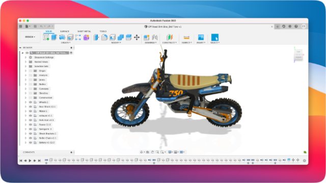
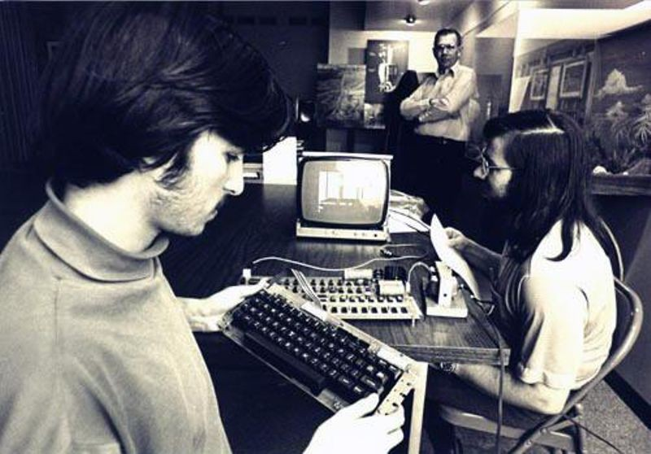

Sorry for the Delay of Labs!
虚假的飞升疾走
- 好好上完课，发个 paper，然后就可以躺平了
真正的飞升疾走
- 成为卷王之王
所有 deadline 都移至期末考试之后。
Hello, World 的故事
一个非常基础的问题
操作系统是 “执行程序” 的系统
- 什么是程序？程序是如何执行的？
int main() {
printf("Hello, OS World\n");
}
$ gcc hello.c
$ ./a.out
Hello, OS World
两门系统课程最重要的 Takeaway Message
程序 = 计算机系统 = 状态机。
“操作系统” 课给了你程序的 “最底层” 的状态机视角
- 如何创造一个 “最小” 的可执行文件？
a.out是什么？a.out执行的第一条指令在哪里？printf是如何被调用的？a.out执行了哪些系统调用？a.out执行了多少条指令？perf stat -e instructions:u
操作系统：同时也是状态机的 “虚拟者”
操作系统 APIs
你看到的一切都会被分解成 “内存上的计算” 和 “系统调用”。
操作系统 = 一系列对象和它们的操作
- 用户空间的
一切 都建立在 “系统调用” 之上- 状态机管理
- fork, execve, exit
- 地址空间管理
- mmap, munmap
- 文件和设备管理
- open, close, read, write, mkdir, link, unlink, ...
- 状态机通信
- pipe, signal, kill, ...
- 状态机管理
从逻辑门到计算机系统
刷一下手机，你的计算机系统经历了非常复杂的过程
- 应用程序 (app) → 库函数 (Android Framework) → 系统调用 → 操作系统中的对象 → 操作系统实现 (C 程序) → 设备驱动程序 → 硬件抽象层 (AbstractMachine) → 指令集 (x86-64/Arm64) → CPU, RAM, I/O设备 → 门电路 → 另一台计算机 → 分布式系统 → ...
操作系统课给这个稍显复杂的过程一个清晰的轮廓
- 当你想弄清楚其中的某一部分的时候
- RTFM! RTFSC!
走得更远
所以你到底学到了什么？
Operating systems (最重要的那个 piece): you're delighted
你不再惧怕任何 “system”
- 嵌入式系统
- 通用操作系统
- 分布式系统
- ……
也不再惧怕任何 “需求” 的实现
- 找到合适的系统调用实现
- 做不到？可以自己加个系统调用
- 软件上实现不了？可以改 CPU 来支持！
Hacker's Delights: 新的“理解”
“计算机的本质是状态机”——fork 拷贝了一份状态机
- “一份拷贝” 能有怎样的 power？
- recovery, testing, ...
“死锁检测: lockdep 在每次 lock/unlock 的时候插入一条 printf”
- 这就是 dynamic analysis 的本质
- 如何减少 printf 的数量、怎么巧妙地记录、怎样分析日志……
- 如何调控程序的执行？找到 bug 还是绕开 bug？
“文件系统是磁盘上的一个数据结构”
- 通过 append-only 实现 journaling, copy-on-write, 分布式系统……
并发：走向分布式系统
如何为网络上的多台计算机提供统一的应用程序接口？
- 把多个分布的、随时可能离线的计算机组成一个存储系统
- 在存储的基础上完成计算

虚拟化：重新理解操作系统设计
Microkernel, Exokernel, Unikernel
- 没有人规定，操作系统里一定要有 “文件”、“进程” 这些对象

持久化：重新理解持久存储设计
文件系统没能解决的需求
- 大量的数据 (订单、用户、网络……) + 非简单目录遍历性质的查询
“数据库”：虚拟磁盘上的数据结构
- 就像我们在内存 (random access memory) 上构建各种数据结构
- binary heap, binary search tree, hash table, ...
- 典型的数据库
- 关系数据库 (二维表、关系代数)
- key-value store (持久化的
std::map) - VCS (目录树的快照集合)
和操作系统相关的 Topics
- Computer Architecture
- 计算机硬件的设计、实现与评估
- Computer Systems
- 系统软件 (软件) 的设计、实现与评估
- Network Systems
- 网络与分布式系统的设计、实现与评估
- Programming Languages
- 状态机 (计算过程) 的描述方法、分析和运行时支持
- Software Engineering
- 程序/系统的构造、理解和经验
- System/Software Security
- 系统软件的安 (safety) 全 (integrity)
四周目总结
上操作系统课的乐趣
在课堂上时，你可以思考一些已经很清楚的基本东西。这些知识是很有趣、令人愉快的，重温一遍又何妨？另一方面，有没有更好的介绍方式？有什么相关的新问题？你能不能赋予这些旧知识新生命？……但如果你真的有什么新想法，能从新角度看事物，你会觉得很愉快。
学生问的问题，有时也能提供新的研究方向。他们经常提出一些我曾经思考过、但暂时放弃、却都是些意义很深远的问题，重新想想这些问题，看看能否有所突破，也很有意思。
学生未必理解我想回答的方向，或者是我想思考的层次；但他们问我这个问题，却往往提醒了我相关的问题。单单靠自己，是不容易获得这种启示的。 —— Richard Feynman
四周目的主要改进
课程主线
- 完善了 “状态机” 视角下的程序和操作系统
- 增加了很多代码课 (整改内容)
- 好像终于把动态链接讲清楚了
结果视频丢了一半
- 减少了一些和基础不太相关的内容
更像一门入门课了
自我批评与五周目
课程主线
- 更明确地问题驱动
- 先抛出具体的问题，部分改进，没有取得预期效果
- 增加更多的代码 demos
- 重写课程网站：课后 quiz
- 整改项目，再次未能如愿
其他
- 欢迎大家提建议/意见
毒鸡汤
国产操作系统之谜
国产操作系统：一直在 “换壳”，从未被超越
- 换壳不等于没有技术含量
- Deepin, 麒麟, MIUI, EMUI 都是有技术含量的
- 套着 Android 的鸿蒙也没那么简单
- 那些喷的人，你们有编译/修改过 AOSP 吗？
但很少见到真正落地的国产操作系统核心技术
- 透明计算？
- 生态背锅？
- 盗版悲锅？
国产操作系统之谜 (cont'd)

但核心技术别人说造就造啊！
- Google
- Android, ChromeOS, Fuchsia, ...
- Microsoft
- Windows NT Microkernel; Windows Subsystem for Linux; Windows on ARM; ...
- Apple
- Rosetta-2
让读研究生的你去造，再多人也造不出个像样的东西啊
- 看看 ACM Software System Award
- 1983 至今，清一色 North America/Europe
“黑客” 文化与技术基因
伟大的发明从天才和车库里诞生
- Bill Gates 在 1975 年开发 Altair BASIC 时在 Harvard 的大型机上实现了全系统模拟器 (Intel 8080A)
- 南京大学《计算机系统基础》课程 40 年后才追上

我们面临的困境
高考：为普通人提供了阶级跃升的途径
- 公平性带来了无止境的强化训练和 (部分) 扭曲的价值观
- 进入大学以后的 “去高考化” 反而没有做好
- 又变成刷题内卷
华为/龙芯/...的挑战比大家想象得要多
- 华为只有一个陈海波
- 绝无仅有的能把控关键技术的人，已经作为领导事务缠身
- 如果有 10,000 个陈海波？
- 不要说华为了，中国的整个计算机产业都要腾飞了
我们面临的困境 (cont'd)
2023 年，大家毕业了。拿到两个 offer，怎么选？
- 华为上海
- 600,000 年薪，996 奋斗，经常熬夜加班
- 做鸿蒙操作系统难题攻关
- Google 上海
- 300,000 年薪，955 躺平，经常上班摸鱼
- 年薪减少一半，发量增加一倍
- 大家挤破头皮去拿这个 offer (没点真本事还真没戏)
- 然后打着嘴炮说鸿蒙是套壳操作系统，是文字游戏
繁荣、危机与机遇

繁荣：中国经济的腾飞
- “最幸福的一代人”
危机：文明的冲突和世界秩序的重建
- 美国人坐不住了
- 5G/AI 的壁垒性优势不明确
- 你还活在 “自己很强” 和 “我想躺平” 的幻觉里？
- 连交个 Online Judge 都要面向 OJ 编程，如何和车库里的美国人对抗？
机遇：无法阻挡的互联网和开源
- 开源社区没有国界：Linux, QEMU, ... 理论差距无限缩小
先知先觉的人已经开始学习网课了
每个人心中都有一点英雄主义
我们需要真正的专家，去做一些看似疯狂的，fundamental 的东西，去推动这个世界的进步
- 我们的征途是星辰和大海 —— 银河英雄传说
所以，对自己要求高一点。
(没什么前途的老学长对你们的期待)